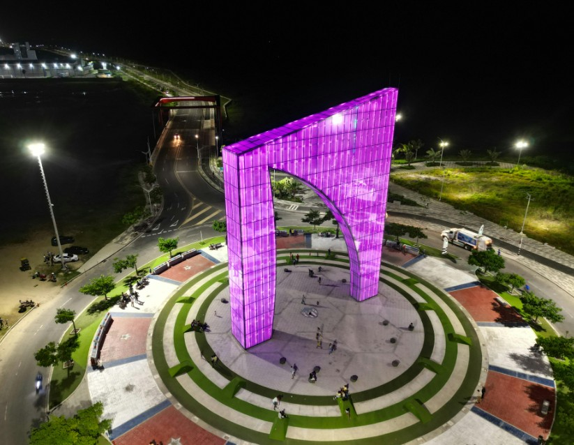
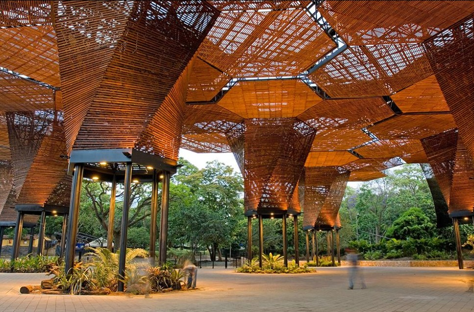

BARRANQUILLA
¡La puerta de oro de Colombia!


¡La puerta de oro de Colombia!
En Medellín, la amabilidad de su gente se siente desde el primer momento. Siempre hay alguien dispuesto a ayudarte, darte indicaciones o recomendarte el mejor camino con una sonrisa.

Una de las mayores riquezas de Medellín es su gente. No importa si eres visitante, siempre encontrarás personas dispuestas a orientarte, acompañarte y hacerte sentir seguro.
Moverse por Medellín es más fácil gracias a la calidez de sus habitantes. Desde indicarte qué transporte tomar hasta acompañarte, su ayuda va más allá de lo esperado.
Conoce más sobre BarranquillaEn cada rincón de Medellín encontrarás personas dispuestas a ayudarte, desde recomendarte lugares hasta guiarte paso a paso. Su hospitalidad es parte de su esencia.
| Lugar | Ubicación | Características |
|---|---|---|
| Parque Arví | Corregimiento de Santa Elena, al nororiente de Medellín (aprox. a 30 km del centro) | Reserva natural con senderos ecológicos |
| Jardín Botánico | Zona norte de Medellín, cerca de la estación Universidad (Calle 73 # 51D-14) | Gran variedad de plantas y Orquideorama |
| Parque Pies Descalsos | Centro de Medellín, cerca de La Alpujarra y Plaza Mayor | Experiencia sensorial y relajante |
El Orquideorama del Jardín Botánico de Medellín es una impresionante estructura inspirada en la naturaleza, donde la arquitectura y las flores se unen en perfecta armonía. Rodeado de orquídeas y vegetación, es un lugar mágico que invita a conectarse con la belleza natural de Colombia.
